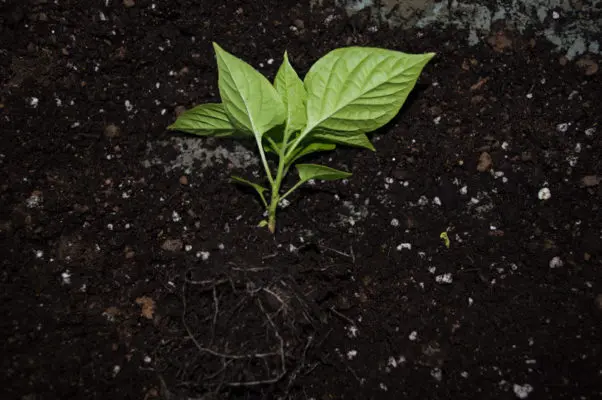

Krok namáčania semien pomocou urýchľovača klíčenia semien sa nesmie vynechať!
Po vyklíčení semien môžete znížiť teplotu na 70 °C a zabezpečiť, aby mali sadenice každý deň 14 až 16 hodín svetla.
Rastúce svetlá by mali byť 7 - 12″ nad korunou listov, aby nedošlo k ich spáleniu.
Semená papriky príliš nezalievajte, pretože to môže spôsobiť ich hnilobu alebo zvlhnutie. Povrch pôdy by mal medzi zalievaním mierne vyschnúť.
Chceli by ste sa vyhnúť používaniu plastových krytov, pretože tie môžu v pôde a v prostredí rastliny zadržiavať príliš veľa vlhkosti pre mnohé odrody feferóniek.
Pridajte ventilátor alebo iný zdroj vetrania, aby ste klíčiacim rastlinám dodali kyslík a zabránili vzniku plesní spôsobujúcich zvlhnutie.
Rastliny zalievajte, keď je večer vypnuté osvetlenie, pretože kvapky vody vytvárajú so svetlom zväčšujúci efekt a môžu spáliť listy pod kvapkou vody.
Keď vaše sadenice dosiahnu výšku 2″, je čas začať hnojiť.
Začnite s polovičným roztokom tekutého hnojiva pri zalievaní raz týždenne, kým rastliny nedosiahnu výšku 4″, vtedy môžete prejsť na plné tekuté hnojivo.
Niektorí záhradníci mali problémy s popálením sadeníc niektorými silnými zmesami, preto zvyčajne používame hnojivo na ryby, aby sme sa tomuto problému vyhli.
Ako sadenice rastú, dávajte pozor na múčnatku, mšice, bielu mušku a iných škodcov, ktorí môžu byť pre vaše rastliny problematickí.
Keď vaše rastliny dosiahnu výšku 8-12″, je čas presadiť ich do záhrady alebo trvalých nádob. Ak sadíte vonku, nezabudnite počkať aspoň dva týždne po dátume posledných mrazov vo vašej oblasti, aby ste predišli stratám spôsobeným náhlym chladným počasím.
Papriky sú citlivé na nízke teploty. Mráz alebo dokonca teploty blízke nule výrazne spomalia rast a pravdepodobne zahubia mladé sadenice.
Pred presadením semenáčiky postupne počas niekoľkých dní vystavujte väčšiemu množstvu priameho slnečného svetla. Presuňte kvetináče bližšie k miestu skutočného vysádzania. Rastliny tak budú mať čas prispôsobiť sa novému prostrediu a otužovať listy a stonky.

Sadenice vysádzajte 2 - 3' od seba, aby ste si neskôr v sezóne zabezpečili dostatok priestoru. Ak sadíte do nádoby, použite nádobu s objemom aspoň päť litrov, aby ste zabezpečili dostatok priestoru pre rast koreňov.
Pri presádzaní nezabudnite do pôdy pridať vápno alebo kostnú múčku, pretože nočníky majú počas vegetačného obdobia tendenciu spotrebovať veľa vápnika.
V čase presádzania prihnojte organickým hnojivom. Možno budete chcieť zvážiť pridanie hnojiva na podporu rýchleho rastu koreňov alebo môžete zmiešať jednu tabletu aspirínu v galóne vody, aby ste dosiahli podobný účinok.
Vrchnú vrstvu obložte mulčovaním, aby ste zabránili vyrastaniu buriny a kradnutiu živín, ktoré rastliny papriky potrebujú na svoj rast. Mulčovanie tiež udržiava korene v chlade a vlhkosti.
Po presadení papriky dôkladne zalejte a nasledujúcich niekoľko dní ju pozorne sledujte, pretože šok z presadenia je veľmi reálny.
Počas celého vegetačného obdobia zabezpečte rastlinám oporu, a to buď kolíkmi, alebo klietkami na paradajky.
Neskôr v sezóne, keď sa nasadzujú plody, môže silný vietor zlomiť ťažké konáre.
Rastliny papriky počas vegetačného obdobia spotrebujú veľa vápnika a fosforu, preto nezabudnite každé štyri týždne posypať povrch pôdy kostnou múčkou, a keď rastliny začnú skutočne kvitnúť a plodiť, posypte ju každé dva týždne.
Ak chcete radšej použiť materiál, ktorý nie je živočíšneho pôvodu, môžete pridať posyp zo zmiešaného vápenného prášku a dreveného popola, aby ste dosiahli rovnaké výsledky, ale nezabudnite použiť popol zo skutočného dreva, nie z umelých polien.
Papriky, ktoré majú nedostatok vápnika, majú tendenciu k hnilobe na koncoch kvetov alebo sa nedostatok môže prejaviť na nových listoch ako pokrčené alebo pokrčené listy. Ide o trvalú deformáciu a po aplikácii vápnika budú správne rásť len nové listy.
Hoci existujú výnimky, väčšina feferóniek potrebuje 90 - 150 dní na to, aby po výsadbe vytvorila zrelé plody.
Všetci tí istí škodcovia, ktorí postihujú zeleninovú záhradu, postihujú aj rastliny papriky.
Ak budete udržiavať rastliny zdravé a spokojné, zvýši sa ich prirodzená schopnosť chrániť sa pred škodcami a chorobami. Bežní škodcovia papriky
Odporúčaný organický pesticíd
Neem olej
Nezabudnite postriekať vrcholky a spodky všetkých listov.
Najťažšia časť je za nami! Teraz prichádza na rad zber.
Papriky sú zrelé, keď ich farba prejde zo zelenej na reklamnú farbu (červenú, žltú, čokoládovú atď.)
Keď papriky úplne zmenia farbu, už nebudú rásť na veľkosti a sú pripravené na zber.
Plody by sa mali ľahko odtrhnúť tak, že ich podržíte za stopku a nakloníte smerom nahor. Po úplnom dozretí sa z rastliny odlomí.
Vzhľadom na to, že rastliny veľmi pálivej papriky rastú tak dlho, mnohí ľudia sa obracajú na prezimovanie, aby zachránili svoje rastliny pred mrazivými zimami.
Rastliny papriky neprežijú teploty nižšie ako 0 °C, preto je v netropických oblastiach nevyhnutné ich na zimu preniesť. Ušetríte tak mesiace času na pestovanie v nasledujúcej sezóne.
Celoročné uchovávanie papriky v kvetináčoch uľahčuje jej prezimovanie.